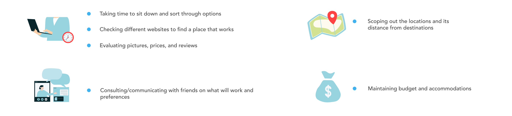
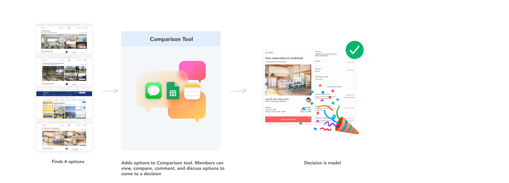

U I / U X
PerfectPlace
PerfectPlace is a tool designed to help trip planners compare and evaluate their rental stay findings and identify their best option together.
Role
- UI/UX Designer
- Solo Project
Tools Used
- Adobe XD
Duration
- Course of 4 months
O V E R V I E W
Where will we stay?
I must admit, growing up I never thought that hard about how my parents managed to organize our family vacations - from booking hotel reservations to purchasing plane tickets to even navigating during those infamous road trips before Google Maps existed. Only recently as an adult have I really begun to dip my toes into the world of trip planning - And answering the initial question “where will we stay?” was an excellent introduction to realizing how difficult it can get. In my experience, successfully communicating back and forth with trip members, saving locations of interest, and recalling everyones thoughts was a lot less straightforward than I realized.

Narrowing 100 options to 1
Rental Booking sites often provide tools users need to filter available listings down by certain criteria. While this is the case, the capabilities of these tools are limited. Aside from being able to filter your search and view listings on a map, the rest is up to the user to determine by reviewing each listing by themselves or with others. I found that there doesn’t seem to be a tool that supports a user’s process of elimination individually or as a group effort to come to a decision - which arguably is one of the harder parts of trip planning.

Do other people struggle with this process too?
I first went online to learn about how people feel about this and what resources were out there - specifically with finding a place to stay online. While I couldn’t find an existing comparison tool, I instead found a countless amount of articles from people sharing their best tricks and strategies to find the best booking option.
 So while I couldn’t find a statement that declared this was an issue, it was clear that there was
some strategy required for this.
So while I couldn’t find a statement that declared this was an issue, it was clear that there was
some strategy required for this.
U S E R R E S E A R C H
Tell me a Story about a Trip You Planned
To further my understanding of what this process looked like for others, I scoped out a few participants who could tell me about their personal experiences with booking stays online and what their methods are to eliminate their options, communicate with others, and maintain their priorities. I spoke to 5 individuals who were screened to have some experience with trip planning and booking a stay online. I asked each participant in the beginning of the interview to recall one trip and proceeded with my questions. I gained a lot of insight from these interviews. I learned about how their decisions were made and what factors they were keeping in mind during the process.
So, How did they get from 100 options to 1?
After the interviews, I compiled together all of the quotes from my participants that captured key thoughts they had during their decision making process that helped qualify if a place could remain in the standing for options.

Key Findings
When it comes to available filters on booking sites, all of my participants only use the price and location filter. While this is the case, everyone still felt willing to adjust their price depending on the trip. And after filtering these things everyone had a method to eliminate their options further.
 This confirmed to me that people did in fact need to narrow down their choices in a way that existing tools currently don’t help facilitate.
This confirmed to me that people did in fact need to narrow down their choices in a way that existing tools currently don’t help facilitate.

What does a potential user look like?

Existing Pain Points
Kaitlin's process, taking into account the processes that my interviewees shared they use, would likely start with her keeping track of all her options on spreadsheets/multiple tabs/lists, communicating these findings to her friends, friends opening up the links and analyzing themselves, communicating back and forth to settle on an idea, and ultimately deciding on one option together at the end.
How can this tool improve Kaitlin's process?
With the use of this tool, however, Kaitlin can keep track of her options, make comments, start a discussion, and her friends can view them in one place and do the same. At the end, they can vote on their final destination.
I D E A T I O N
MVP
To establish what essential features were necessary to accomplish the goals/tasks for a potential user to identify a place to stay, I outlined a MVP (minimum viable product). From there, I identified what key features I wanted to include to fulfill what is needed for the user.

Key Features


Design System & Iterations

U S E R T E S T I N G
Testing Out My Assumptions
After creating my first prototype, I set out to test my tool on five participants. In my first round of testing, my main goals were to determine how intuitive the function of the display icons, comparing two findings, and map features were.

F I N A L P R O T O T Y P E
Questionaire
Users are first prompted with a series of questions to set up their trip on PerfectPlace. This is where they will enter their finding URLs, any attractions they're interested being near, ideal dates of the trip, and more.

Home Screen
Users are able to view their findings on the map and in the cards below with all their details. Users can "thumbs up" ammenities and leave comments about their thoughts. The information entered by the user in the initial questionaire are available in the left nav bar and can be adjusted.
Map Feature
Users can view the distance/time from any locations they're interested in being close to by selecting the attraction.
Feedback, Comments, & Voting
Users canview the comments left by other trip memebers and their own by visiting the 'Summary & Feedback' page. After reviewing, users are able to cast their vote for their favorite finding. Once all members submit their vote, they are notified of the winning choice - their perfect place for the trip.

R E F L E C T I O N
Moving Forward
If I were to continue this project, I would like to focus more on bringing more life to the social component of the app and making that more visible whether that be inviting wording or changing the location and colors of the button. I learned from my user testing that the social component is actually the highlight of the tool so I would even consider bringing those features out in the main display instead of being hidden at first. I also feel that the best application of this tool would be as an add-on to an existing booking site like Airbnb or Vrbo. This way the user can still access the search features to find additional places and have a more whole, complete experience from the start of searching to the end of finding their most ideal listing.